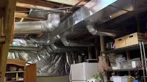

Zone Control System Services San Diego
With zone control systems, you can use single zone unitary HVAC equipment to regulate the temperature in every room of your home. The zone control system frequently warms or cools the rooms you use. It works with your thermostat(s) to supply the energy required for heating or cooling each room in your house.
Thermostats, a control panel, and zone dampers in your ductwork are the only essential components needed to zone your house. Your heating and cooling system's efficiency is unaffected by zoning, but a zone control maximizes system utilization.
Our skilled technicians will evaluate your property and put personalized zone control system services in San Diego homes. They will enable you to change the temperature in various rooms independently. This results in energy savings and increased efficiency, in addition to improving comfort.
You can enjoy precise comfort in your house with a zone control system. It increases the lifespan of HVAC equipment and reduces your energy expenses. Zoning is the best option, particularly if you live in a large house with unused rooms or unequal temperature areas.
Your next zone control systems can be installed, replaced, repaired, and maintained by our experts at EZ Heat and Air.
Zone Control Maintenance Services In San Diego
System Design and Planning
Professional HVAC specialists work closely with property owners to develop customized zoning solutions that match specific needs. This collaborative process involves analyzing room layouts, studying usage patterns, and identifying temperature variation challenges unique to San Diego's regions. The resulting design maximizes both comfort and energy efficiency with our zone control system services in San Diego.
Maintenance and Tune-ups
Regular maintenance keeps zone control systems running at peak performance throughout San Diego's varying seasons. Service technicians perform system checks, clean components, test damper functionality, calibrate thermostats, and verify proper communication between all system elements. These tune ups and zone control maintenance services in San Diego help prevent unexpected breakdowns and extend equipment life.
Repair Services
Experienced repair teams diagnose and fix issues ranging from malfunctioning dampers to thermostat programming problems. Technical specialists use advanced diagnostic tools to pinpoint exact problems, whether dealing with mechanical components, electrical connections, or control system glitches. Quick response times help minimize discomfort during system downtime.
Zone Control Installation
Expert technicians handle the complete installation process of new zone control systems in San Diego properties. This service includes a thorough assessment of the existing HVAC setup, strategic placement of dampers throughout the ductwork, and smart thermostats installation. Our San Diego HVAC zone control system installations team ensure integration with current heating and cooling equipment while optimizing airflow patterns.
San Diego HVAC Zone Control System Installations and Benefits

Energy efficiency and cost savings are the two main advantages of this type of system. Combination of a zone control system with a programmable or smart thermostat will provide more control over the heating and cooling of your house.
Your home will feel more comfortable thanks to the zone control system. The days of hot or cold areas are over. Home, sweet home, will be just the way you've always imagined.
If you have one or more of the following circumstances in your home, you might benefit from a zone control system:
- Cathedral or high ceilings
- Multiple stories or levels
- Huge open spaces
- Large glass windows
- A slab foundation made of concrete
- Finished spaces over your garage or in the basement or attic
- A sprawling floor layout that goes beyond your primary living space
Now is the time to call EZ Heat and Air for zone control maintenance services in San Diego.

24/7
Service
Same-day Plumbing Service For Any Issue Or Concern Related To Leakage, Clogging, Or Malfunctioning Of Appliances.

FREE
Estimate
Request a quote and get a free estimate for installation, repair, and replacement services from professionals.

FREE
Service Call
From plumbing repairs to full replacements, connect with our experts to inquire about services at zero charges.

15%
Discount Available
15% Off to the Police, Military, Fire Seniors and Teachers for Services up to $1000.

FINANCING
Available
Overcome financial barriers and keep your plumbing system up to date with our alternative financing options.
Don’t Let Plumbing Issues Interrupt Your Comfort & Budget
CALL EXPERTS NOW
 (760) 392 7616
(760) 392 7616
What Our Clients Say About Us

"I’ve been using their air conditioner maintenance service for years, and it’s always top-notch. Their team is quick, professional, and thorough. They ensure my AC is running smoothly and efficiently, saving me money on energy bills. Highly recommend them for all HVAC needs!"
Sarah M. - San Diego
"Excellent service! I called for air conditioner maintenance before summer, and their technician arrived right on time. They cleaned the filters, checked everything, and ensured my AC was in perfect condition. It’s running great, and I haven’t had any issues since!"
John L. - Riverside
Why Choose EZ Heat and Air for Zone Control System Services In San Diego?
EZ Heat and Air stands out as a trusted leader in zone control system services. We have over two decades of specialized experience for every project. Here are the reasons why you should choose EZ Heat and Air:
Technical Expertise
Technical excellence forms the cornerstone of their service approach. Each technician undergoes rigorous training in the latest zone control technologies, ensuring they handle everything from basic maintenance to complex multi-zone installations. This expertise shows in their impressive track record of successful installations across various property types throughout San Diego County.
Quality Service
The company's commitment to quality extends beyond just technical skills. Our customer service team coordinates seamlessly with installation crews, ensuring clear communication throughout every project phase. Property owners receive detailed explanations of their options, transparent pricing, and regular updates during installation or maintenance work.
Emergency Service
Emergency responsiveness sets EZ Heat and Air apart from competitors. Our dedicated emergency response team maintains 24/7 availability, typically arriving within two hours when urgent issues arise. This quick response time proves especially valuable during San Diego's occasional heat waves when system reliability becomes crucial.
Resource Efficiency
Resource efficiency drives their approach to system design and maintenance. The company's technicians specifically configure each zone control system to maximize energy savings while maintaining optimal comfort levels. Our maintenance programs help prevent unexpected breakdowns and extend system lifespan through regular, thorough inspections and timely adjustments.
Affordable Prices
The company's pricing structure reflects their commitment to value. Our comprehensive service packages offer excellent long-term value through quality workmanship, premium materials, and ongoing support. We also provide flexible financing options, making advanced zone control systems accessible to more San Diego homeowners.
Through dedication to quality and customer satisfaction, EZ Heat and Air sets industry standards for zone control system services in San Diego. Our comprehensive approach ensures property owners receive reliable, efficient, and long-lasting comfort solutions tailored to their specific needs.
FAQs
Ans. A zone control system divides a home into different temperature-controlled areas, allowing residents to set varying temperatures throughout their living space. The system uses a series of dampers installed in the ductwork, along with separate thermostats for each zone, giving homeowners precise control over their comfort levels in different rooms.
Ans. Zone control systems make the most sense for San Diego homes with multiple stories, large open spaces, or rooms that receive different amounts of sunlight throughout the day. Homes with unused spaces or family members with different temperature preferences also benefit greatly from zoned heating and cooling.
Ans. Regular maintenance typically includes checking damper functionality, calibrating thermostats, inspecting electrical connections, and ensuring proper communication between system components. San Diego's climate can affect system performance, so seasonal check-ups help maintain optimal efficiency.
Ans. Local homeowners often report energy savings between 20-30% after installing zone control systems. The actual savings depend on factors like home layout, usage patterns, and local utility rates. San Diego's mild climate allows for even greater efficiency when zones are properly programmed.
When issues arise, technicians first check thermostat settings and batteries, inspect damper operations, and verify proper system communication. Sometimes, recalibration or minor adjustments can resolve temperature inconsistencies between zones.
Ans. Professional installation usually takes between 1-3 days, depending on home size and system complexity. Experienced San Diego contractors can often complete straightforward installations in existing homes within a day, while more complex setups might require additional time.
Ans. Installation costs vary based on home size, number of desired zones, existing ductwork condition, and chosen control features. Local contractors can provide detailed estimates after assessing specific property requirements and homeowner preferences.